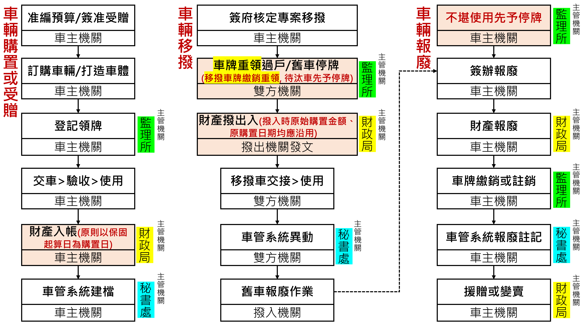

車輛購置或受贈、移撥、報廢相關流程參考示意圖
 |
閒置及低度使用清查
- 1080419府授秘總1083005504-函令各機關不得以節油政策作為閒置理由
- 車管要點八I：各一級機關應於每年一月清查含所屬機關學校之各類車輛，前一年度有無閒置或低度使用情形（各區公所由本府民政局代為清查），其認定標準如下：
- 閒置車輛：年度行駛里程汽車未達三千公里；機車未達七百五十公里。
- 低度使用車輛：年度行駛里程汽車達三千公里，未達六千公里；機車達七百五十公里，未達一千五百公里。但該車年度用車日數已達第七點第二項所定常態用車需求指定日數以上者，免予認定為低度使用。
- 車管要點八II：各機關各類車輛有下列情形之一，免予納入清查：
- 當年度二月以後取得，致全年使用未滿十二個月，或當年底前已移撥他機關或報廢，產權非屬本府所有之車輛。
- 屬備妥特殊機具全時待命，專供救災搶險等緊急事件現場作業用特種車。
- 依當年度一月計算，以車齡逾十年之汽車或車齡逾七年之機車，充當機關轄管園區或廠區內部作業使用，或各區公所備供區域災防物資運送使用者。
- 以受託代辦代管中央或其他政府機關工程或設施之費用所購置，且結束代辦代管時須原車返還者。
- 車管要點八III：各機關之特種車、特業車、座位數三人以下之小貨車，得由各負責清查之一級機關依業務情況另訂閒置、低度使用認定標準。但工程救險特種小客貨、雙廂式五人座以上小貨車，或警消後勤、指揮、警備、消防查察用特種小客車及小客貨，如其改裝程度較低，可供一般公務載運人員通用者，仍應依第一項標準認定之。
- 車管要點]九I：經各一級機關清查年度有閒置車輛情形者，應於每年二月底前彙整車輛基本資料、用車數據及造成閒置原因提報本府，本府依下列原則核定處理方式：
- 車況不堪使用或即將達強制報廢年限，原機關已規劃辦理報廢者，限期報廢。
- 無強制報廢年限規定之車輛，車齡已逾十五年而有閒置者，以限期報廢為原則。但車況良好者，另案處理。
- 年度行駛里程達閒置里程標準百分之八十以上，閒置程度較輕者，得留原機關且後續不得再閒置。
- 機關內當年度相同公務用途及車別種類之閒置車輛，與當年度及次年度已報廢汰除或預定報廢汰除（非汰換）之相同公務用途及車別種類車輛，併計其年度行駛里程數後，已超過第八點第一項第一款之閒置里程標準，確有機會改善部分車輛閒置問題者，得以該閒置里程認定標準為基數，每滿一基數，由機關選擇續留一輛且後續不得再閒置。第四點第四款及第五款之各類小型車，里程數得合併計算。
- 受贈或受補助取得並屬指定用途之車輛，依其性質具無法移撥因素者，得留原機關並將改善措施報本府核備。
- 車況良好，未符合得留原機關條件，或原機關無留用需求者，核列待媒合車輛，供有常態用車需求之其他機關移撥接收。
- 經媒合無接收機關者，得留原機關續用。但遇該車再次閒置，經二度媒合仍無接收機關者，以限期報廢為原則。
- 其他特殊情形者，另予專案處置。
- 車管要點九II：各負責清查之一級機關應持續列管追蹤留原機關閒置車輛之改善情形，同機關同一車輛連續二年發生閒置情形，或低於該機關報本府核備之改善目標者，應由負責清查之一級機關檢討責任提報本府核備。
- 1121004府授秘總1123009794號函：本府公務車輛管理常態查核及處理措施
- 重申本府公務車輛使用管理要點所管控車輛使用效益，係以一般業務或公務用小客車、小客貨、機車為重點。
- 後續低度使用者，該車於報廢後以移撥堪用車為限，不得購置新車；不當閒置者，該車應列管媒合至成功為止或限期報廢。
- 秘書處每季透過車管系統資料主動檢核各機關一般業務或公務用小客車、小客貨、機車，有無當季閒置或新車低度使用情形。
- 機關連續2季度一般業務或公務用小客車、小客貨、機車，有不當閒置或使用3年內新車不當低度使用情形者，為重大缺失，後續該車不得編列相關費用，該類車輛規模減額前亦不得再取得同類車輛，並由秘書處輔導機關評估釋出該車或儘速報廢汰除。
- 經列管或輔導釋出車輛，由秘書處建立常態媒合機制隨時受理移撥申請。
車輛移撥涉及車輛管理、財產管理及主計規定之配套措施
- 車輛之使用涉及維養、保險、油料、稅費等諸多經費支出，機關車輛規模之管控與閒置清查，並須洽監理機關辦理驗車過戶，性質特殊，故其移撥應依臺北市市有財產管理作業要點第49點第1款所規定「本府專案核准」之程序方得辦理（會辦秘書處、主計處、財政局），不得透過本府機關易物網自行撮合。
- 為避免同一車號因移撥因素重複出現於不同機關，導致查核該車使用紀錄時（例如違規）不易區分其機關歸屬，請於車籍過戶時均一律辦理新領車牌。
- 本府警察局所釋出退役堪用車現況均已停用，為避免長期停用加速車況劣化，接收機關應儘速完成移撥點交作業。
- 其他機關所釋出使用中車輛，則以接收機關之時程需求為主，由撥出入雙方自行協調移撥期程。
- 各接收機關核有應相對報廢車輛者，原則應於該車已達最低使用年限，且已取得受撥車輛時，儘速完成財產報廢及車牌繳銷作業，未經專案報府同意，不得自行延長使用致虛增車輛規模。但機關遇特殊事故致其他同類使用中車輛必須優先報廢者，得經知會本府秘書處後，調整相對報廢對象。
- 移撥期程涉及次年度車輛油料、維養費、保險費之減列或增編，以及釋出機關因小客車、小客貨撥出致車額數減少，需適度酌增短程車資或交通費等概算調整事宜者，請於編列期限前儘速完成調整作業，未及納編預算，由機關就相關業務費勻支。
- 待移撥車輛未撥出前，原機關應善盡財產維護保管責任（例如督責專人每週至少發動引擎1次）；點交車輛時，撥入機關應再次檢視車號及車況是否與事先檢視時相當，如顯有故障異常情形，雙方應先予釐清處理方式，勿勉強過戶移撥，必要時得向本府秘書處反映，以查明責任歸屬並視必要另行安排車輛。
- 移撥涉及以車輛折舊殘值實物作價後，對營業基金增資、減資，或對非營業特種基金增撥基金、折減基金者，應依規定專案報經主管機關核轉本府核准。
- 本府每年度清查各機關閒置車輛，及配合主計處審查各機關汰換車輛概算，常列管有閒置待媒合之8人座手排廂型車，或車況良好但車齡逾15年之待退役車，如各機關均無公務接收需求，以往只能繼續閒置，或報廢對外標售或轉贈學校汽修科供教材使用，但現已建立另撥予市立學校棒球隊供學生移訓團練委外車使用，及撥予市立動物園以無牌車方式供園內農用機制。各機關後續車齡逾15年而車況良好之小客車、小客貨，如因故辦理報廢，可主動洽秘書處視全府車輛管理動態協助後續媒合事宜。